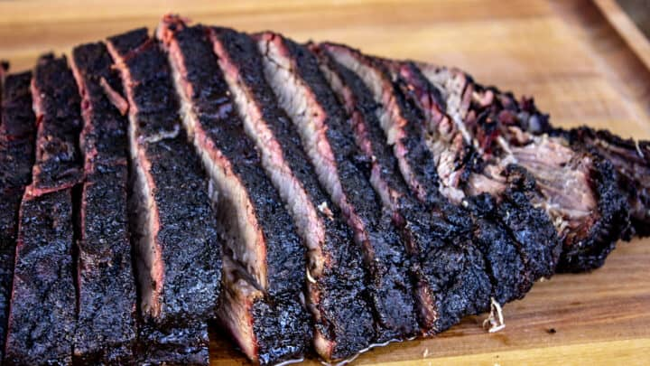

Smoked Beef Brisket

Description
Texas-style beef brisket that is slow-cooked for 20 hours and quite literally melts in your mouth. Serves 20.
Ingredients
- Flat-cut Beef Brisket, 10lbs
- Kosher salt, 1 cup
- Black peppercorns, crushed 1 cup
- Hickory wood chips
Steps
- Generously rub salt and pepper over outside of brisket, completely covering it.
Cover brisket in foil and store in refrigerator overnight to dry brine.
- Remove brisket at least 1 hour before cooking to allow it to get towards room temperature.
- Place brisket in electric smoker and add wood chips to tray. Set smoker for 225 degrees.
- Cook brisket at this temperature for 8 hours. Replace wood chips as needed.
- After 8 hours of smoking, reduce smoker temperature down to 160. Cook for another 12 hours.
- Remove brisket and let it rest for 10-30 minutes.
- Slice brisket against the grain in long strips.